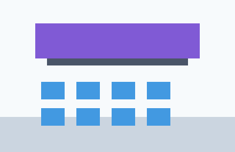
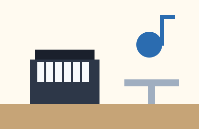
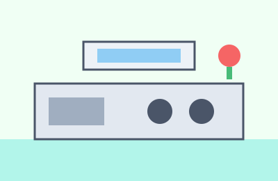

施設案内
つばめ台コミュニティセンターの貸室・開館時間・利用料金についてご案内します。
貸室のご案内
| 部屋名 | 定員 | 利用料金（1時間） | 主な設備 |
|---|---|---|---|
| 多目的ホール | 100名 | 1,200円 | ステージ、音響設備、プロジェクター |
| 会議室A | 20名 | 400円 | ホワイトボード、モニター |
| 音楽スタジオ | 10名 | 600円 | ピアノ、防音設備 |
| 調理実習室 | 16名 | 500円 | 調理台4台、オーブン |
予約は利用日の3か月前から、窓口または電話で受け付けています。
フロアギャラリー



開館時間・休館日
| 平日 | 9時〜21時 |
|---|---|
| 土曜・日曜・祝日 | 9時〜17時 |
| 休館日 | 毎月第3月曜日、年末年始（12月29日〜1月3日） |
利用料金の減免について
次のいずれかに当てはまる団体は、利用料金が半額になります。窓口で減免申請書をご提出ください。
- 構成員の過半数がつばめ台市内に在住する子ども会・老人クラブ
- 障害者手帳をお持ちの方が構成員に含まれる福祉団体
- 市内の小・中学校のPTA活動
詳しくはお問い合わせフォームまたは窓口でご相談ください。